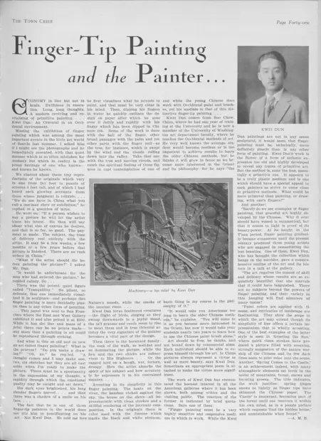

指画访谈、本人肖像及浮雕，第41页
访问原网页 ↗Visit original website ↗

馆藏图像与原文Archived images and documents
- 指画访谈、本人肖像及浮雕，第41页Interview, portrait and bas-relief, Town Crier, p. 41 I043
- Machinery 浮雕，1928年原刊局部Machinery, historical reproduction of the relief I048
- 滕白也肖像，1928年原刊局部Portrait of Kwei Dun in the 1928 Christmas issue I049


相关记录Related records · S061
原始网址Original URL
https://cdm16118.contentdm.oclc.org/digital/collection/p16118coll23/id/17029